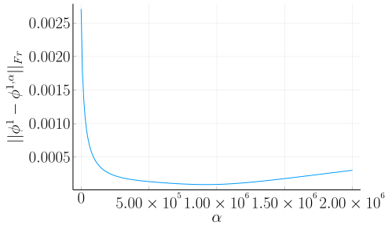

Numerical methods
on the Cahn-Hilliard Equation
Table of Contents
The Cahn-Hilliard equation
Variables
| \( M(\phi): [-1,1] \to \mathbb{R}^+ \) | Mobility coefficient |
| \( W(\phi): [-1,1] \to \mathbb{R}^+ \) | Double well potential |
| \( \varepsilon > 0 \in \mathbb{R} \) | Interface coefficient |
| \( \phi : \Omega \times (0,T) \to \mathbb{R}^d \) | Phase-field variable |
| \( \mu : \Omega \times (0,T) \to \mathbb{R}^d \) | Chemical potential variable |

Figure 1: Computational Domain \( \Omega \)

Figure 2: Double well potential \( W(\phi) \)
Cahn-Hilliard Equation:
The aim of the CH equation is to find solutions \( \phi(\vec{x} , t) , \mu(\vec{x} , t): \Omega \times (0,T) \to \mathbb{R} \) such that they satisfy
\begin{equation}
\label{org6e246b3}
\begin{aligned}
\partial_{t}\phi(x,t) &= \nabla \cdot(M(\phi)\nabla\mu),\\
\mu &= - \varepsilon^2 \Delta\phi + W'(\phi), & \text{in} \, \Omega &\times (0,T),\\
-\nabla\mu \cdot \mathbf{n} &= 0\\
\nabla\phi \cdot \mathbf{n} &= 0 & \text{on} \, \partial\Omega &\times (0,T), \\
\phi(x,0) &= \phi^0(x) \,, & \text{in} \, \Omega &
\end{aligned}
\end{equation}
- constant mobility \( M(\phi) \equiv 1 \)
- polynomial potential \( W(\phi) = \frac{1}{4} \phi^2(1-\phi^2) \)
- no flow Neumann boundary conditions
Properties
- Mass conservative
- Total energy decreases
- phase field equation for two phase flow
- diffuse interface equation
- gives position of phases
- 4th order (2 dimensional second order)
- expensive
Baseline solver
- Implicit in time
- discretized on NxN grid
- uses multi-grid scheme
Discrete Method:
\begin{equation}
\begin{aligned}
\partial_{t}\phi(x,t) &= \nabla \cdot(M(\phi)\nabla\mu), \\
\mu &= - \varepsilon^2 \Delta\phi + W'(\phi),
\end{aligned}
\end{equation}
- semi implicit in time
- centered difference in space (NO_ITEM_DATA:SHIN20117441) .
Discrete Method:
\begin{equation}
\label{org34f52fe}
\begin{aligned}
\frac{\color{RoyalBlue}{\phi_{ij}^{n+1}} - \color{Maroon}{\phi_{ij}^n}}{\Delta t} &= \color{RoyalBlue}{\nabla _d \cdot (G_{ij} \nabla_d \mu_{ij}^{n+\frac{1}{2}} )} \,, \\
\color{RoyalBlue}{\mu_{ij}^{n+\frac{1}{2}}} &= \color{RoyalBlue}{2\phi_{ij}^{n+1}} - \varepsilon^2 \color{RoyalBlue}{\nabla_d \cdot (G_{ij} \nabla _d \phi_{ij}^{n+1} )} + \color{Maroon}{W'(\phi_{ij}^n) - 2\phi _{ij}^n} \,,
\end{aligned}
\end{equation}
- semi implicit in time
- centered difference in space (NO_ITEM_DATA:SHIN20117441) .
Variables
| \( b \) | \( b = DL \cdot \left( \phi_{ij}^{n+1} , \mu_{ij}^{n+\frac{1}{2}} \right)^T - L \left( \phi_{ij}^{n+1} , \mu_{ij}^{n+\frac{1}{2}} \right) \) |
| \( DL \) | Jacobian of \( L \) |
| \( \color{RoyalBlue}{L} \) | Implicit terms of the discrete CH equation |
| \( \color{Maroon}{\left( \zeta_{ij}^n , \psi_{ij}^{n} \right)} \) | Explicit terms of the discrete CH equation |
| \( \Omega_d \) | discrete version of the computational domain \( \Omega \) |
solver
- solves equation of type
\begin{equation}
DL \cdot
\begin{pmatrix}
\phi^{n+1}_{ij} \\
\mu^{n+\frac{1}{2}}_{ij}
\end{pmatrix}
= b
\end{equation}
- with Gauss Seidel iteration
- for every point \( (i,j) \in \Omega_d \)
- using a two grid method
- multiple times per sub-iteration
- multiple sub-iterations per time-step
Relaxation
Variables
| \( \alpha > 0 \) | relaxation parameter |
| \( c^{\alpha}:\Omega \times (0,T) \to \mathbb{R}^d \) | solution of an elliptical system |
Relaxed Cahn Hilliard equation
\begin{equation}
\label{orgc1921e1}
\begin{aligned}
\partial_{t}\phi^{\alpha}(x,t) &= \Delta\mu, \\
\mu &= - \varepsilon^2 \Delta\phi^{\alpha} + W'(\phi^{\alpha}),
\end{aligned}
\end{equation}
- simpler PDE
- second order
Relaxed Cahn Hilliard equation
\begin{equation}
\label{org1815764}
\begin{aligned}
\partial_t \phi^\alpha(x,t) &= \Delta \mu \,,\\
\mu &= \varepsilon ^2 \alpha(c^\alpha - \phi^\alpha) + W'(\phi^{\alpha}) .
\end{aligned}
\end{equation}
- simpler PDE
- second order
Additional elliptical system
\begin{align}
\label{orgaf7531c}
- \Delta c^\alpha + \alpha c^a &= \alpha \phi ^\alpha,
\end{align}
- requires solving an additional equation for \( c \)
- two dependant equations
- two one dimensional second order equations
- solved similar to the baseline equation
Implementation
- implicit in \( c \)
- solves both equations in tandem
- resolving \( c \) during each sub-iteration required
Exlicit and implicit solution of c
Figure 3: exlicit solution of c

Figure 4: implicit solution of c by alternating solving \phhi and c
choice of α

Numerical Experiments
Energy
- The CH equation is related to the following energy functional
\begin{align}
\label{orgd2978e5}
E^{\text{bulk}}[\phi] &= \int_{\Omega} \frac{\varepsilon^2}{2} |\nabla \phi |^2 + W(\phi) \, dx ,
\end{align}
- The relaxed CH has the following related energy functional
\begin{equation}
\label{org7fc44c2}
E_{rel}(\phi^{\alpha} , c^\alpha) :=
\int_{\Omega} \frac{1}{2}\varepsilon^2 \alpha (c^\alpha - \phi^{\alpha})^2 + W(x) \ d \operatorname{\mathbf{x}}
\end{equation}
- Total energy decreases for the CH equation and the relaxed CH equation
\begin{align*}
\frac{d}{dt}E[\phi(t)] &\stackrel{\partial_n\phi = 0}{=} - \int_{ \Omega } |\nabla \mu|^2 \ d \mathbf{x}, & \forall t \in (0,T)
\end{align*}
- Relaxed CH equation should decrease both energy functionals

Figure 5: Discrete Energy decrease in both solvers
mass conservation

Figure 6: relaxed energy conservation for both solvers
Sub iteration

Figure 7: Behaviour of both solvers during sub-iterations
time

Figure 8: Behaviour of both solvers when varying time-step size
Comparison


Conclusion
Discretization
Domain
\begin{equation}
\Omega_d = \left\{ i,j \mid i,j \in \mathbb{N} \,, i,j \in [2,N+1] \right\}
\end{equation}
\begin{equation}
\begin{aligned}
\phi_{ij}^n: \Omega_d \times \left\{ 0, \dots \right\} &\to \mathbb{R}\\
\mu_{ij}^n: \Omega_d \times \left\{ 0, \dots \right\} &\to \mathbb{R}
\end{aligned}
\end{equation}
\begin{align*}
G_{ij} &=
\begin{cases}
1, & i,j \in [2,N+1] \\
0, & \text{else}
\end{cases}
\end{align*}
Finite Differences
\begin{align}
D_x\phi^{n+1,m}_{i+\frac{1}{2} j} &= \frac{\phi^{n+1,m}_{i+1j} - \phi^{n+1,m}_{ij}}{h} & D_y\phi^{n+1,m}_{ij+\frac{1}{2}} &= \frac{\phi^{n+1,m}_{ij+1} - \phi^{n+1,m}_{ij}}{h}
\end{align}
We define \( D_x\mu_{ij}^{n+\frac{1}{2},m} , D_y\mu_{ij}^{n+\frac{1}{2},m} \) in the same way.
Discrete CH equation
\begin{equation}
\label{org7bf7037}
\begin{aligned}
\frac{\phi_{ij}^{n+1} - \phi_{ij}^n}{\Delta t} &= \nabla _d \cdot (G_{ij} \nabla_d \mu_{ij}^{n+\frac{1}{2}} ) \,, \\
\mu_{ij}^{n+\frac{1}{2}} &= 2\phi_{ij}^{n+1} - \varepsilon^2 \nabla_d \cdot (G_{ij} \nabla _d \phi_{ij}^{n+1} ) + W'(\phi_{ij}^n) - 2\phi _{ij}^n \,,
\end{aligned}
\end{equation}
Discrete CH equation
\begin{equation}
\label{org0e12b58}
\begin{aligned}
\frac{\phi_{ij}^{n+1,\alpha} - \phi_{ij}^{n,\alpha}}{\Delta t} &= \nabla _d \cdot (G_{ij} \nabla_d \mu_{ij}^{n+\frac{1}{2},\alpha} ) \,,\\
\mu_{ij}^{n+\frac{1}{2},\alpha} &= 2\phi_{ij}^{n+1,\alpha} - \varepsilon^2 a(c_{ij}^{n+1,\alpha} - \phi_{ij}^{n+1,\alpha}) + W'(\phi_{ij}^{n,\alpha}) - 2\phi _{ij}^{n,\alpha} \,.
\end{aligned}
\end{equation}
b
\begin{align*}
\begin{pmatrix}
\zeta^n_{ij}
\\
\psi^n_{ij}
\end{pmatrix}
&=
\begin{pmatrix}
\frac{\phi_{ij}^{n}}{\Delta t}\\
W'(\phi_{ij}^n) - 2\phi_{ij}^n
\end{pmatrix}
.
\end{align*}